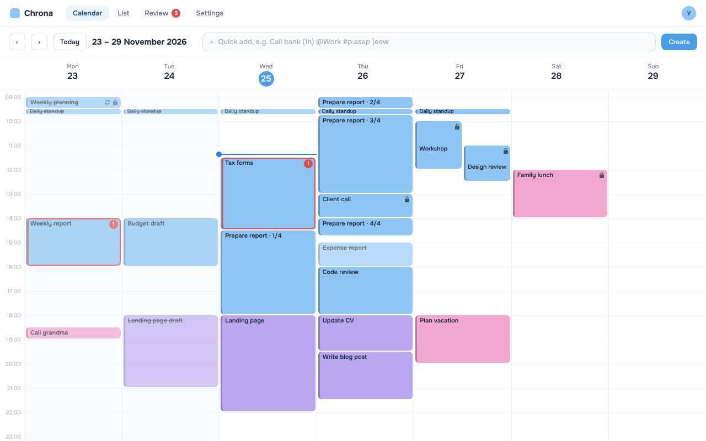
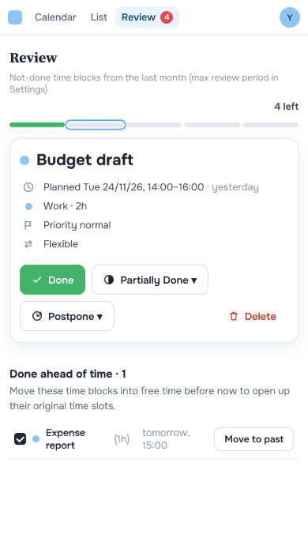

A calendar that works for you. Not one that pushes you.
Made for solo founders, freelancers and consultants. Chrona gives every task real time between your calls, protects your free time, and replans quietly when the day changes.
How Chrona works for you
Every task gets real time
A to-do list only grows. Chrona gives each task a place in your week, between your calls, so it actually gets done.
Not sure how long it takes?
Type the task. Auto-Fill suggests how long it will take and which category it belongs to, based on tasks you've done before. Keep it or change it.
Your free time stays yours
Set your work hours and family time once. Work never lands in your evening. It goes to the next free morning.
Focus first or deadlines first
Some weeks you need deep work in one piece. Some weeks you need everything started sooner. Pick one in Settings and change it any time.
Connect Chrona MCP to your favorite AI harness
Manage your time by asking AI in natural language. AI maps your intentions to specific actions. Chrona adjusts your schedule deterministically, making no mistakes.
Something came up? The work moves. The meetings don't.
A client books a two-hour call on Tuesday in your calendar. Chrona reads it, keeps it fixed, and every task that was in the way finds a new free slot at once. You don't drag anything, and your calendar stays untouched.
- No two-way sync.
- No duplicates.
- Nothing moved in your calendar behind your back.
Progress, not pressure
No red overdue pile, no streaks to keep. Chrona keeps what you did and quietly makes room for the rest.
Not today? Move it
Postpone to later today, tomorrow or next week in one tap. No guilt, no overdue list.
Half done counts
Did two hours of three? Mark it partially done. Your progress stays visible, and the last hour gets its own time.
All of it, in one calm app
This is the demo as it opens: a sample week of calls, tasks and family time, each in its own place. On the phone, Review asks what got done and makes room for the rest.


See how Chrona would plan a week like yours.
Add a few of your own tasks to a sample week and watch them find their place.
Try Demo Or get early access by email